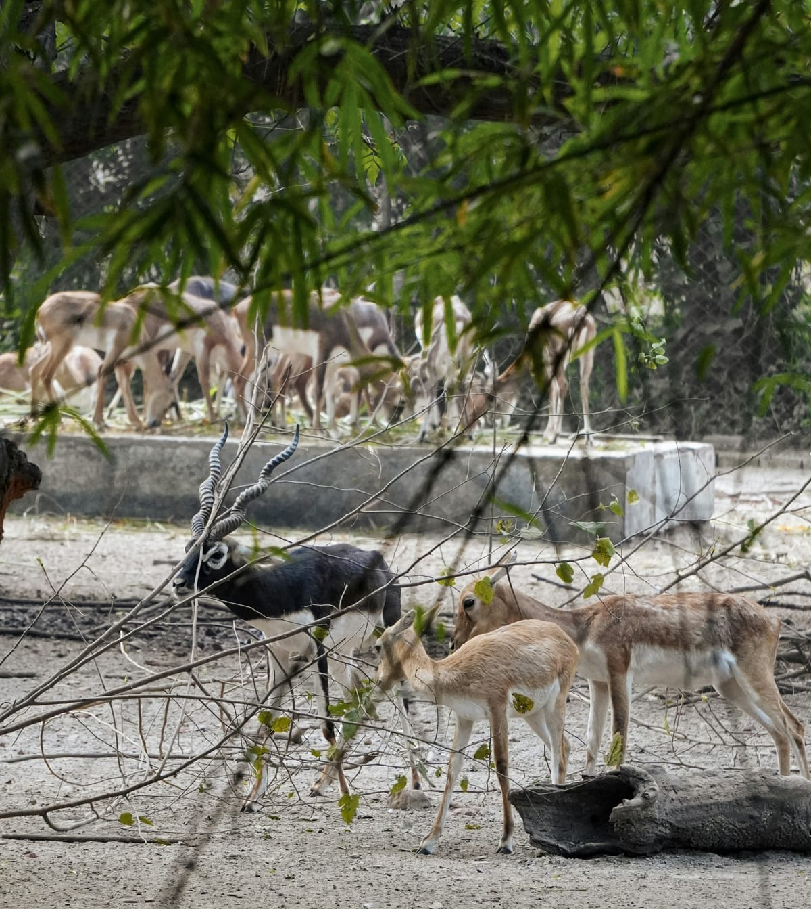

Missão
Proteger a fauna e preservar a natureza por meio do resgate, cuidado e reabilitação de animais, além de ações de conservação e educação ambiental.
Atuamos na preservação da natureza, proteção e resgate de animais.

Fundada por biólogos, veterinários e ambientalistas, a ONG atua na linha de frente contra o tráfico de animais silvestres, o desmatamento e os impactos da expansão urbana sobre a biodiversidade.
Proteger a fauna e preservar a natureza por meio do resgate, cuidado e reabilitação de animais, além de ações de conservação e educação ambiental.
Contribuir para uma sociedade mais consciente e comprometida com a proteção dos animais, da biodiversidade e dos ambientes naturais.
+1.850 animais acolhidos: Quantidade de animais silvestres resgatados de situações de risco, maus-tratos ou tráfico que receberam atendimento médico-veterinário e reabilitação para retorno ao seu habitat natural.
42 áreas de preservação acompanhadas: Total de santuários, reservas biológicas e corredores ecológicos mapeados e monitorados ativamente pelas equipes de campo para proteção da biodiversidade.
+25.000 pessoas alcançadas: Número de estudantes, moradores de comunidades locais e participantes impactados por palestras, workshops e campanhas educativas de conscientização ambiental.
Foco: Resgate e Reabilitação de Animais
Ação focada no acolhimento, tratamento veterinário e reabilitação física e comportamental de espécies vítimas do tráfico ilícito, atropelamentos em rodovias ou maus-tratos. O projeto conta com um Centro de Triagem temporário e recintos de Treino de Voo e Caça, garantindo que os animais recuperem os instintos necessários para retornar com segurança à vida livre.
Foco: Proteção de Habitats Naturais
Iniciativa dedicada ao mapeamento, recuperação e preservação de fragmentos florestais e áreas de mata nativa. O projeto atua instalando passagens ecológicas (aéreas e subterrâneas) em rodovias cortadas por florestas, reflorestando áreas degradadas e criando ilhas de proteção para evitar a fragmentação do habitat da fauna local.
Foco: Educação Ambiental nas Comunidades
Programa socioeducativo itinerante voltado para escolas públicas e comunidades rurais situadas no entorno de áreas de preservação. Por meio de oficinas lúdicas, palestras e feiras de conscientização, o projeto ensina a importância de não manter animais silvestres como pets, como agir ao encontrar um animal ferido e como promover a convivência harmônica entre os moradores e a natureza.
Dedique seu tempo e talento para fazer a diferença na conservação ambiental. Como voluntário, você pode atuar diretamente no apoio aos cuidados com os animais, na organização de campanhas de conscientização, em eventos da comunidade e no suporte operacional e administrativo das nossas ações de campo.
Sua contribuição financeira garante a compra de medicamentos, alimentação especializada, equipamentos veterinários e a manutenção dos recintos de reabilitação. Qualquer valor ajuda a manter nossos projetos vivos e assegura um atendimento digno e contínuo para os animais resgatados.
Presenciou um crime ambiental, venda ilegal ou animal silvestre em perigo? Não fique calado. Saiba como e onde acionar os órgãos competentes (como IBAMA, Polícia Ambiental e Linha Verde) de forma segura e responsável, contribuindo para a proteção das espécies e para a responsabilização dos envolvidos.
Fale com a nossa equipe para tirar dúvidas, propor parcerias ou saber mais sobre o nosso trabalho.
Email: ongguardioesdafauna@email.com
Telefone / WhatsApp: (11) 99999-8888
Se você presenciar situações de tráfico de animais, caça ilegal, desmatamento ou maus-tratos, acione os órgãos de fiscalização responsáveis. As denúncias podem ser realizadas pelos canais oficiais dos órgãos competentes:
Polícia Ambiental: 190
Linha Verde do IBAMA: 0800 61 8080
Ao encontrar um animal silvestre ferido, preso ou em situação de risco, não tente capturá-lo ou alimentá-lo por conta própria, pois ele pode se assustar e tentar se defender. Mantenha uma distância segura, afaste animais domésticos do local e entre em contato com um órgão ambiental ou serviço especializado para solicitar o resgate adequado.
Telefone: (11) 99999-8888
E-mail: ongguardioesdafauna@email.com
Endereço: Rua dos Pequenos Ecossistemas, nº 100 — Bairro Verde — São Paulo/SP